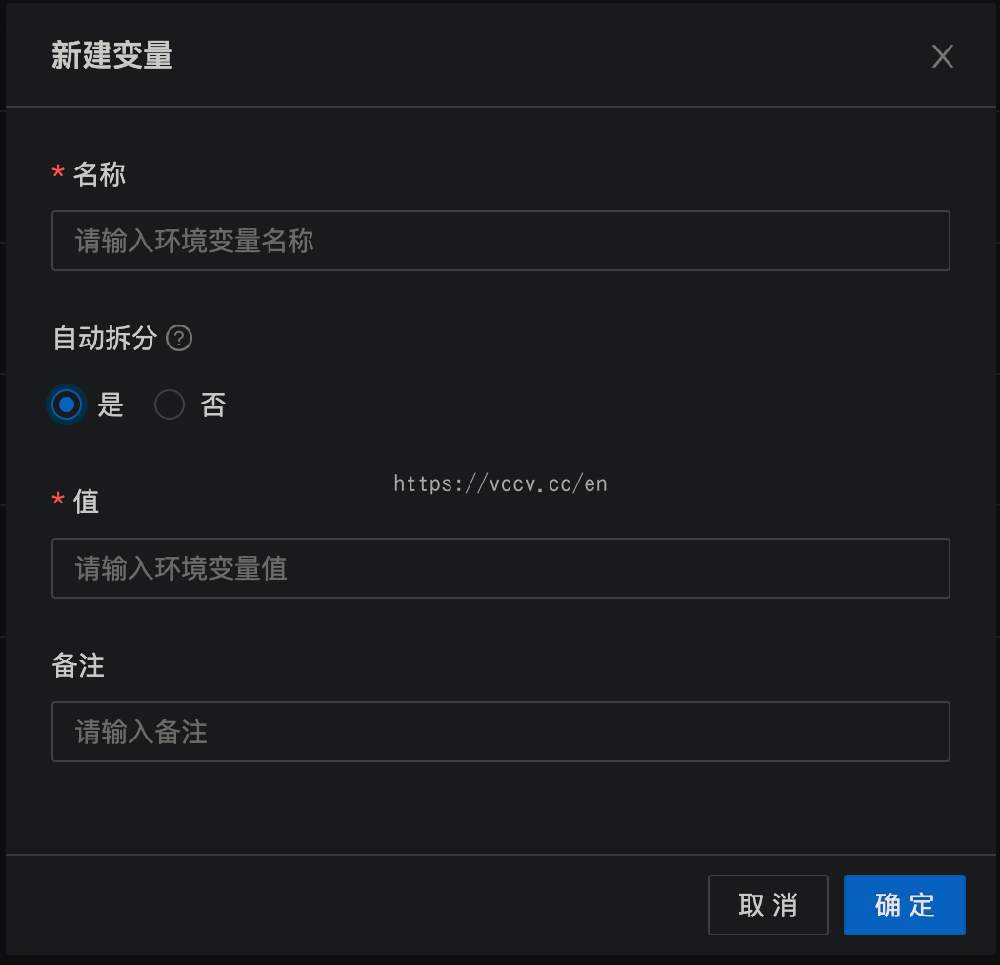

Since my intention is to squeeze the value out of idle servers, this article is all about deployment with the server as the body, other devices such as N1 or Playcloud, please find your own information to deploy.
Server Selection
Region selection.
It is best to choose a domestic server, so that it is safer for the Jingdong hanging, but there are network problems (connection to GitHub is unstable and troublesome), while foreign servers have no problems in this regard.
Select Centos 7 x64 for the system.
Centos 7 is better compared to the Green Dragon panel. I have tested that some environment dependencies of Ubuntu system cannot be installed, which is more troublesome.
Notification settings there can be configured with multiple notification methods, choose the one you use most often. If not, you can also skip or Baidu Sever Sauce (simple, not recommended), Enterprise WeChat Robot (recommended for those who use Enterprise WeChat).
Name is arbitrary, can not be filled; command is as follows, one line, a total of nine; timing rules can fill in their own, I default here 0 0 0 * * * , which means 0 hours, 0 minutes and 0 seconds of each day.
Once all of them are filled in, we actively run through them, select them all and click Run All. Wait a while and you will see hundreds of additional tasks.
Configuring Jingdong cookies
Here I am using Google Chrome, visit the Jingdong mobile login address , open the developer mode (Shortcut key: F12), open the Network tab, follow the webpage prompts to log in to your Jingdong account, and copy the account cookie, as shown in the following figure.
Then go back to Qinglong panel, select Environment Variables —> New Variable, the name is JD_COOKIE, the value is the cookie just copied, and the auto split hold is No. Click OK to finish adding finally.
Multiple accounts only need to have the value Line feed to enter the next cookie inside, you cannot create another variable.
Mutiple accounts need to switch the AUTO_SPLIT option to YES on the newest version.
The cookie values only need to be pt_key and pt_pin, if you don’t know how to copy and paste them all, it’s fine.
Do not perform frequently to avoid black numbers.
Jingdong account is recommended to be bound to WeChat, the activity lottery draw to WeChat red envelope will be automatically withdrawn to WeChat wallet.
Modify configuration file (optional)
Click Configuration file, you can modify the notification push service in it. The notification push here is the push of daily tasks, and the push set at the beginning is the login push of Qinglong panel, etc. It is recommended to set it up here, but be aware that the messages are usually particularly numerous.
Installing Dependencies
1 2 3 4
# Enter docker exec -it qinglong bash # Install run curl -fsSL https://ghproxy.com/https://raw.githubusercontent.com/shufflewzc/QLDependency/main/Shell/QLOneKeyDependency.sh | sh
A long wait to finish is all it takes.
If your Qinglong container is not called qinglong, please replace it yourself.
Run
At this point we are finally done, we can select the number of pages as 500 Article/Page and then run the batch of tasks by selecting all.
You need to pre-install wget, centos users can directly yum install wget, other systems can do it by themselves.
Update 1
Be sure to download the 京东、京喜、京东极速版 apps and open the following activities (some need to choose to plant or produce items to choose on their own, do not leave it empty, otherwise it is equivalent to the activity is not open), in case the script can not run the unopened activities, resulting in lower earnings.
京东 tasks：东东农场、东东萌宠、宠汪汪、种豆得豆；
京喜 tasks：京喜财富岛、京喜牧场、京喜工厂；
京东 tasks：汪汪乐园
note that we need to bind the WeChat (some scripts will automatically withdraw cash to WeChat).
Update 2
2022/06/02 update the mutiple accounts configuration.